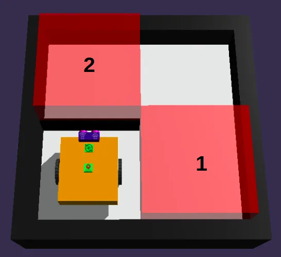
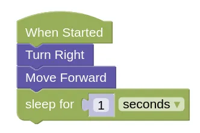
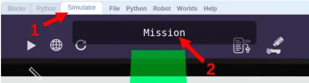

Maze Challenges
Try using Decomposition to solve these maze challenges!
Example 1
This challenge will be opened in a new tab. Open it, take a look, then switch back to this page.

Decompose
To solve this maze, we'll need to visit...
- Red Box 1
- Red Box 2
Let's decompose step 1 a little more...
- Red Box 1
- Turn Right
- Move Forward
- Stop for 1 second
- Red Box 2
Let's write the code for that...

Try out the code!
Now we'll decompose step 2...
- Red Box 1
- Turn Right
- Move Forward 2
- Stop for 1 second
- Red Box 2
- Turn Left
- Move Forward
- Turn Left
- Move Forward
- Stop for 1 second
Now it is your turn to code. Add on to your previous code to complete the maze!
Challenges
Now we have a series of challenges for you to try out.
For each challenge, click on the Simulator Tab, then the Mission button to see the mission you need to do.

Follow instructions and note down the special Code after doing the challenge successfully!
Maze Challenge 1
- Load this challenge
Maze Challenge 2
-
Load this challenge
-
This one is larger than the maze in the example, and it has 3 boxes that you need to visit.
Maze Challenge 3
-
Load this challenge
-
There are more than one way to solve this maze. Can you find the fastest path?